從 weather.gov 的 8 項 Bad UI 問題與 9 張 Redesign 分鏡出發， 以 Django、Neon PostgreSQL 與 Render 實作可操作的前台、會員系統與管理後台。
Same data, clearer decisions. 從「看懂天氣」到「知道下一步」。
沿用 Bad UI 作業的 Design Tokens（#1567D3、#0F2438、#35B6E8、溫度色、AQI 色）， 以 Django Template + 原生 CSS 實作，不依賴前端框架。
課程要求：5 頁前台、登入前後差異、多元查詢、Django 後台、Neon、雲端部署與 10 組 AI Prompt。
原首頁 113 個連結、3 個搜尋框；新首頁只保留現在、建議、預報、警報四件事。
不是做一個靜態 mockup：城市、預報、警報、會員都進資料庫，後台可編修。
通勤族需要 30 秒內做決定；戶外活動者需要時段建議；緊急人員需要影響範圍與行動。
前期以 6 張原始截圖、量化統計與 Lighthouse 建立問題清單；本期把每一項變成畫面與程式。
113 個連結、3 個搜尋框搶注意力。→ 任務導向首頁、單一搜尋。
首頁與預報頁各有不同搜尋樣式。→ 全站一致搜尋與 tabs。
多套標題、按鈕、連結與表格樣式。→ Design Tokens 與元件。
77% 文字 ≤ 12px，資訊牆難以掃讀。→ 內文 14px、輔助 12.5px。
大量文字與術語，缺少「所以呢？」→ 可行動摘要與最佳時段。
KML、AFD、Versions 1–50 對一般使用者無意義。→ 分層揭露、白話優先。
Active Alerts 沒有影響區域與建議行動。→ 警報中心 + 行動指南。
靜態地圖與公告佔據首屏。→ 首屏任務優先，公告降級。
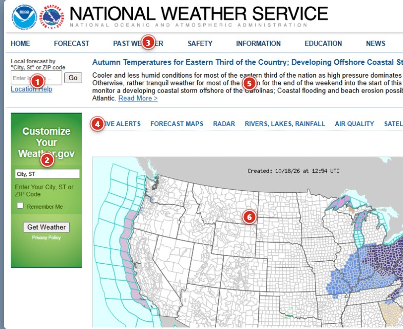
五個頁面不是五個展示畫面，而是一條從「現在」到「接下來」再到「需要行動」的決策路徑。
首屏先回答現在天氣與是否需要注意，再把預報細節往下放。
同一套色彩、字級、按鈕與導覽；前台與後台都使用相同的資料命名。
每個數字旁邊都給出「所以呢」：帶傘、最佳時段、警報行動。
內文 14px、輔助 12.5px、對比 ≥4.5:1、焦點樣式與 skip link。
| 頁面 | 對應的 Bad UI 問題 | 主要功能 | 登入前後差異 |
|---|---|---|---|
| 今天 / | 資訊層級、密度、裝飾搶焦點 | 即時觀測、12 小時趨勢、可行動建議、3 日與 7 日、警報摘要 | 訪客看 New York；會員看預設城市 |
| 城市總覽 /locations/ | 搜尋不一致、113 個連結 | 關鍵字、區域、天氣、溫度區間、有無警報、排序、分頁 | 訪客可查；會員留下查詢紀錄 |
| 城市詳情 /locations/<slug>/ | 預報難掃讀、術語過多 | 24 小時、7 日、觀測細節、此城市警報、鄰近城市 | 收藏按鈕；登入後可加入收藏 |
| 警報中心 /alerts/ | 警報與地點脫節、缺行動 | 嚴重度／類型／區域／關鍵字、時間軸、影響範圍、建議行動 | 訂閱通知需登入；訪客可瀏覽 |
| 會員中心 /dashboard/ | 缺少個人化與回饋 | 收藏、最近查詢、收藏城市警報、°F/°C、通知門檻 | 登入限定；管理員可進後台 |
Neon 是唯一的資料來源；Django ORM 同時服務前台查詢、會員功能與管理後台。
資料模型先對齊 UI 需要的欄位，再讓 Django Admin 直接管理；前台不需要另外寫 API。
訪客預設 New York；登入後自動切換到會員設定的預設城市與 °F/°C。
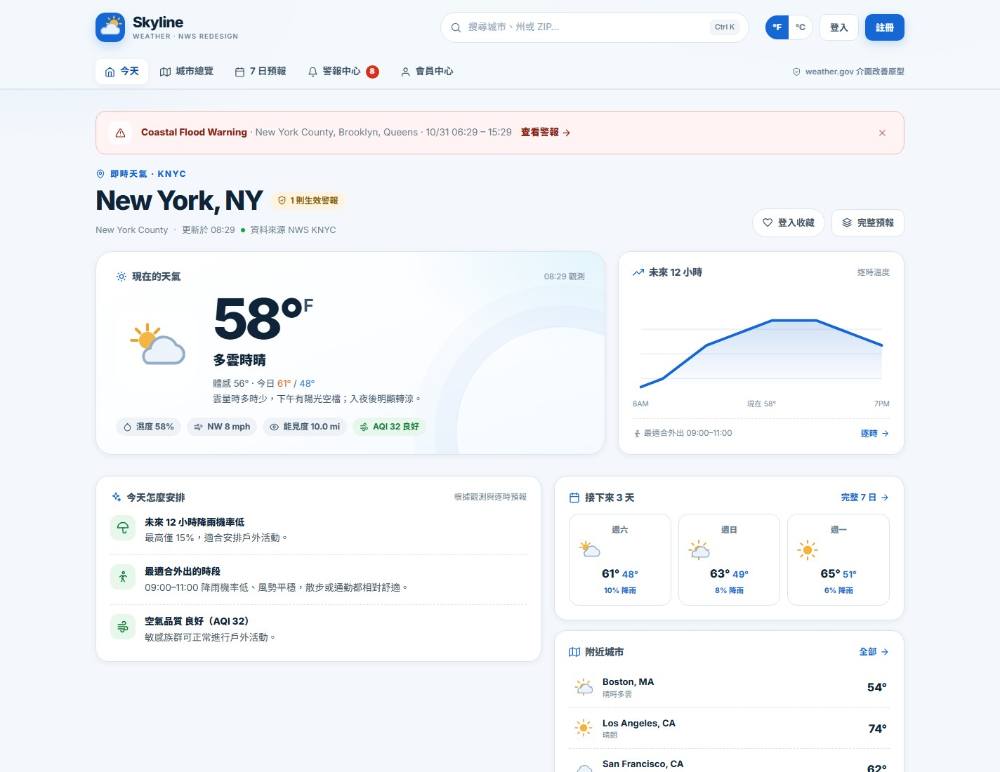
只顯示與目前城市相關的最高嚴重度警報；可關閉，不永久佔用版面。
大字溫度、SVG 天氣圖示、濕度／風／能見度／AQI 一次看到，避免來回切頁。
降雨機率、最佳外出 3 小時、AQI 分級與風勢，直接給出行動建議。
高低溫、降雨機率與風勢同一個視線高度；週末以藍框標記。
關鍵字、區域、天氣、溫度區間、有無警報、排序；訪客可用，會員的查詢會寫入紀錄。
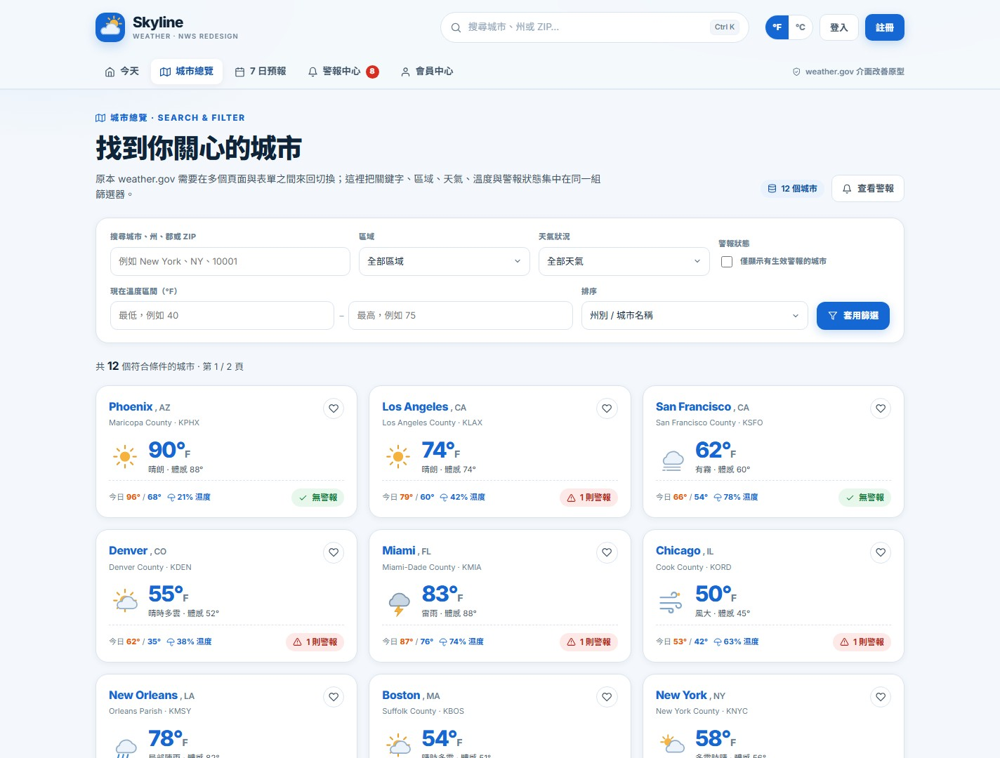
不需要登入；登入後同一組 query 會寫入 SearchHistory，會員中心可一鍵重查。
顯示重設篩選 CTA，不讓使用者卡在空白頁。
24 小時逐時、7 日、觀測細節與此城市警報集中在同一頁，減少來回切換。
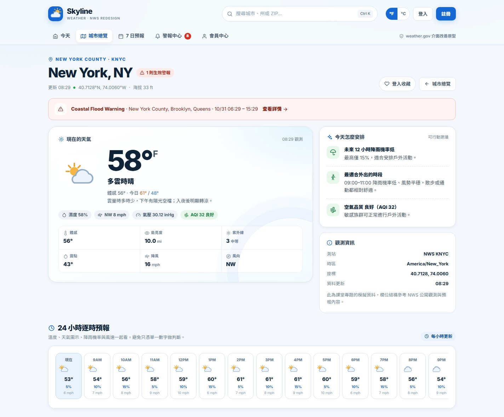
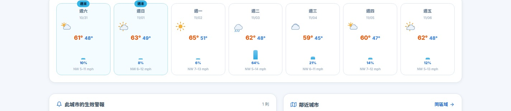
每個小時都有圖示、溫度、降雨機率與風速；第一格標記「現在」。
週末以藍框標記；降雨長條與百分比同時呈現，不靠顏色猜測。
把「這個城市現在要注意什麼」與「附近天氣」放在同一段。
依嚴重度排序，支援嚴重度、類型、區域與關鍵字；每一則都有影響區域、時間軸與建議行動。
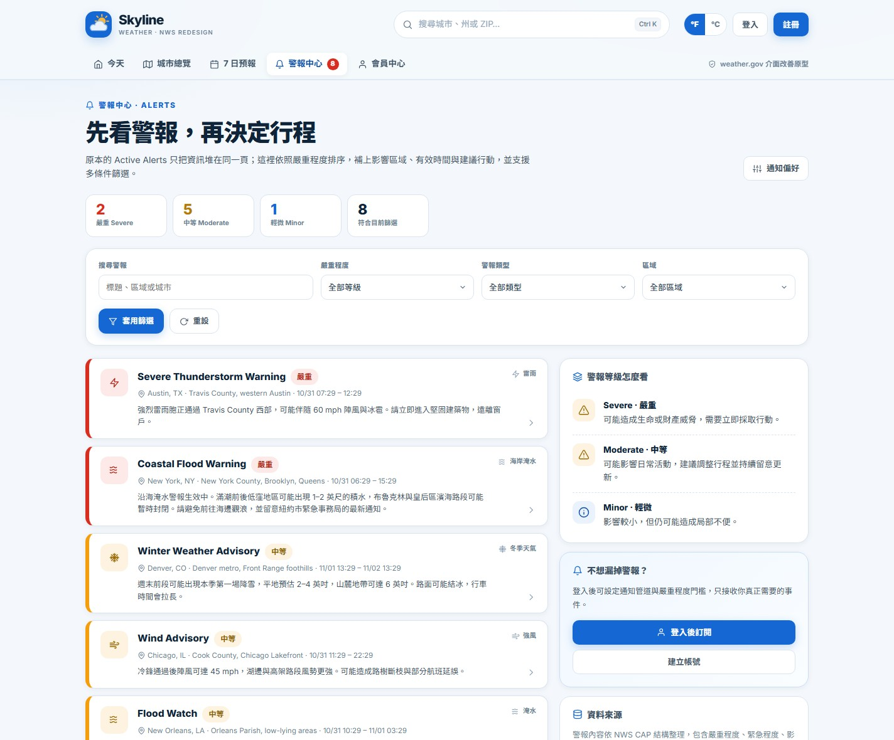
嚴重度色條＋排序；使用者不用自己判斷哪一則最重要。
城市、郡、具體區域與有效時段；不再只有一個 Active Alerts 連結。
詳情頁把 NWS 指引轉成編號步驟，並提供「加入收藏」與通知設定。
App／Email／SMS 與最低嚴重度；從「看警報」走到「被通知」。
訪客完成公開查詢；會員多一層「記得我」：預設城市、收藏、單位、查詢紀錄與通知門檻。
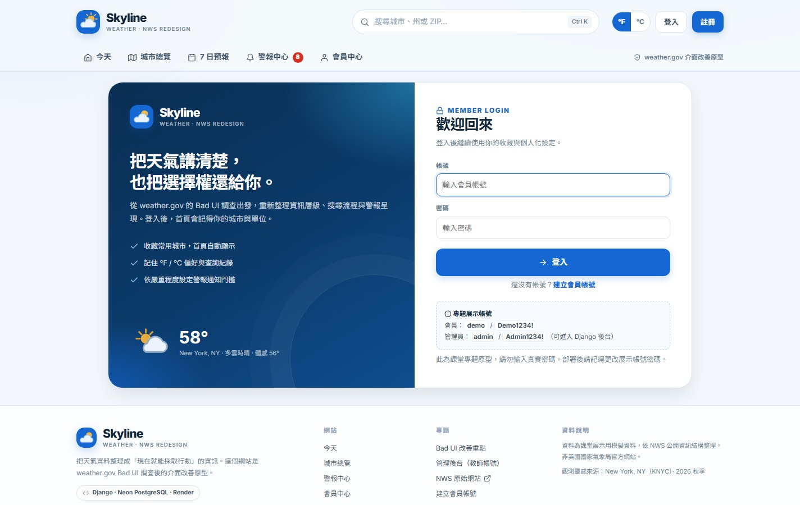
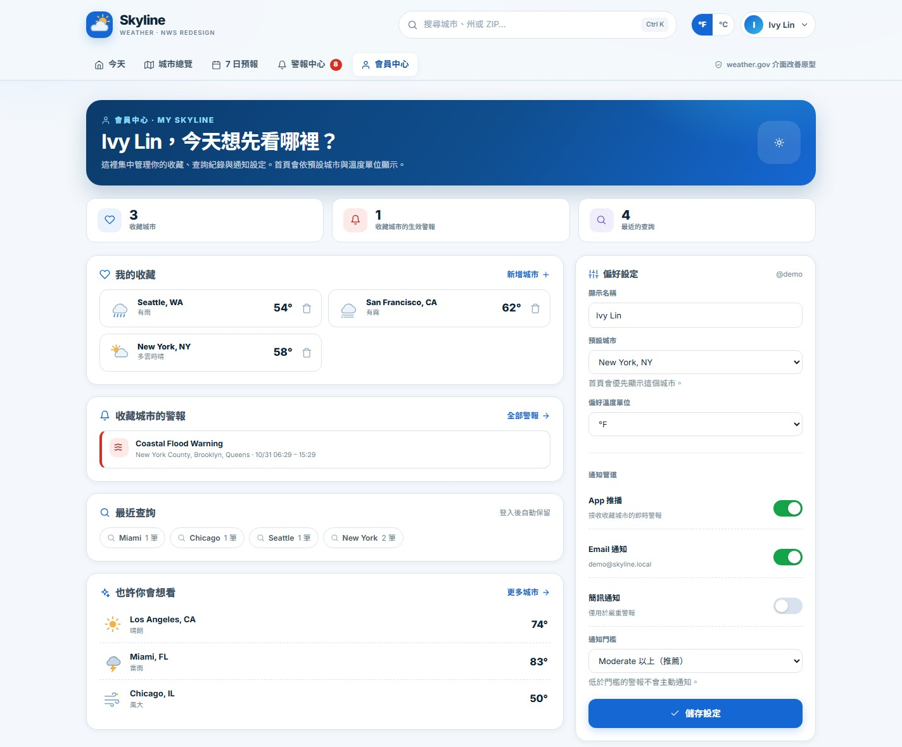
8 個模型全部註冊到 Django Admin；城市、觀測、預報、警報、會員與收藏都能被搜尋、篩選與修改。
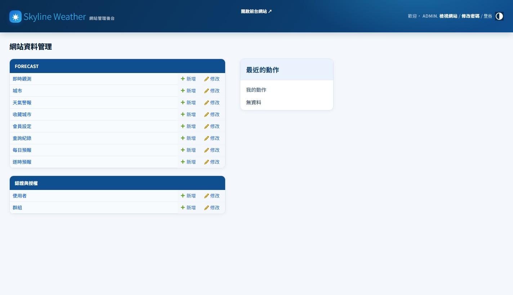
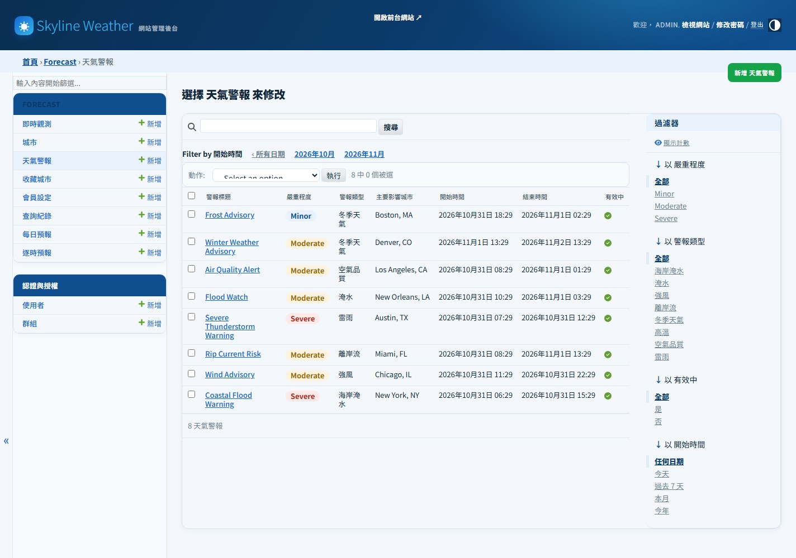
前期 8 組完成 Bad UI 調查與 Redesign；本期 2 組把規範讀進來，並把設計落地成 Django 全端專案。
| # | 階段 | 使用目的 | AI 回覆與實際成果 |
|---|---|---|---|
| 1 | 調查 | 定義作業範圍與交付項目 | 8 章節報告架構、分析／Persona／Flow／Redesign 清單 |
| 2 | 調查 | 擷取 weather.gov 6 個操作畫面 | 首頁、搜尋、預報、細節、AFD、Active Alerts 截圖 |
| 3 | 調查 | 量化連結數、字級與 Lighthouse | 113 links、77% ≤12px、a11y 67、SEO 40 |
| 4 | 調查 | 找出並標註至少 5 項 Bad UI | 8 項問題、6 張標註圖、對應改善方向 |
| 5 | 設計 | 建立 3 類 Persona / Story / Scenario | 通勤族 Ivy、戶外 Michael、緊急管理 Carla |
| 6 | 設計 | 設計 3 條 User Flow | Flow A 查現在／Flow B 規劃週末／Flow C 處理警報 |
| 7 | 設計 | 建立 Design System 與 9 張分鏡 | Tokens + A1–A3、B1–B3、C1–C3；本期直接沿用 |
| 8 | 設計 | 整理前期報告並輸出 PDF | 38 頁 PDF：分析、Persona、Flow、分鏡、Prompt |
| 9 | 實作 | 閱讀期中規範與交付要求 | 5 頁、登入差異、後台、Neon、部署、10 Prompt |
| 10 | 實作 | 把 homework 實作成 Django 網站 | 5 頁前台、8 模型、12 城市、8 警報、12 測試、部署檔 |
本期兩個 Prompt 分別定義「要做什麼」與「用什麼既有設計來做」；AI 產出後仍由我們檢查資料模型、畫面與測試。
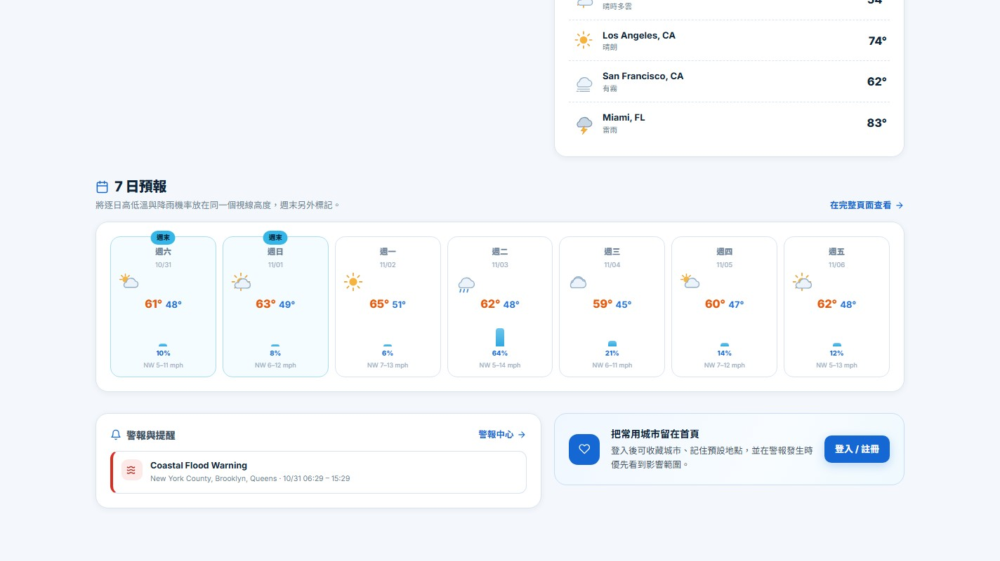
Django + Gunicorn + Whitenoise 部署到 Render；Neon 提供 PostgreSQL；`build.sh` 自動化建置與種子資料。
從「介面很亂」到「8 個問題、5 個頁面、8 個模型、12 個測試」；每一步都要能對回使用者與資料。
8 項 Bad UI 問題被收斂成 5 個任務導向頁面，不再用「功能清單」思考。
9 張 Redesign 分鏡共用一套 Design Tokens，最後長成同一個網站。
8 個模型同時服務前台查詢與 Django Admin；資料是產品的一部分。
12 個測試讓每次調整都能快速確認頁面、查詢、會員與後台沒有壞。
先把 Location、Daily、Hourly、Alert 的關聯想清楚，篩選與詳情頁才有辦法自然長出來。
只做 mockup 不夠；把色彩、字級、間距與元件變成 CSS 與 template，才不會每頁都走鐘。
Neon 連線、環境變數、collectstatic、health check 與測試帳號，少一個都無法 demo。
前後台連結、測試帳號、組員分工、AI 對話截圖索引與檔案位置。